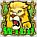

5-Reel 25-line Slots
The objective of Captain Cannon's Circus of Cash is to obtain winning symbol combinations by spinning the reels.
To play the game:
- Click the + and – buttons below Line Bet to increase or decrease your line bet.
- Total bet per game round = line bet X active paylines. Captain Cannon's Circus of Cash game is always played with 25 active paylines. The number of active paylines is fixed and cannot be changed by the player.
- Clicking Spin spins the reels with your currently selected line bet and total bet.
- Reels can also be spun using the Auto Play function. Click on the Auto Plays button to display the list of options. Select the number of spins to be played and click on Spin, so that the automatic reel-spin round begins. The Auto Plays button changes into Stop while the reels are automatically spinning. The Auto Play mode ends when the reels have been spun the number of times determined by the player, or when a bonus round is triggered, or when the player clicks Stop.
- Wins are calculated according to the paytable. Line win = line bet X corresponding multiplier according to the paytable. The paytable can be accessed by clicking the Info button. Mousing over a symbol on the reels also displays the payouts for the symbol.
- Winning symbol combinations can be formed only on adjacent reels starting from left to right.
- On a given payline, only the highest payline winning combination pays while simultaneous winnings on different paylines are accumulated.
- In case of a winning spin, the Win field displays the winnings.
Info page:
- Clicking Info opens the reference screen describing different game components. Clicking the arrow buttons at the lower right-hand corner of the screen enables navigating between the different info screens.
- The Payouts screen shows the paytable of all winning symbol combinations.
- The Bonus Lights screen displays the five special bonus lights that activate a bonus round, describes how these lights are triggered and explains how different bonuses are determined.
- The following nine bonus screens describe the rules and behaviour of the different bonuses.
- Clicking Show Paylines opens a screen that illustrates all possible payline combinations. Clicking Hide Paylines closes this screen and returns to the Info screen.
- Clicking Back to Game exits the Info screen and returns to the game.
- All 25 lines are always active during the game.
- There is a difference between the line bet and the total bet. The line bet shows how much is being bet on a single payline. The total bet shows how much is being bet in total on the game round. Payouts shown in the paytable are multiplied by the line bet.
- Payouts are listed on the Payouts screen, accessed by pressing the Info button. Multiply a payout by your current line bet to find out a possible win amount.
- If two payline winning combinations occur on the same line, the higher of them is paid out. If more than one active payline has a winning combination, the winnings are added up.
- Winning combinations must start from the leftmost reel, and the symbols must be consecutive.
Maximum Win Limit
The maximum win in the game has an upper limit. For more information, see the Terms and Conditions section.
Wild symbol
The Wild symbol  can stand for any other symbol to make the best possible winning combination. Wild symbol combinations do not pay separately.
Bonus Lights
A random number of bonus lights at the bottom of the reels may activate on each spin. The lights do not hold over spins and are not activated in Freespins mode. When all five bonus lights activate, the bonus selection will be triggered.
Bonus Selection
When all five bonus lights activate, a strongman will hammer the feature ladder button on the right side of the screen. The ladder shows all the different bonuses that are available in the game. The higher the bonus on the ladder, the higher the potential prize that you can win. Hitting the feature ladder button will light up the ladder trail, and the highest bonus that lights up will be awarded.
There are three types of bonuses in Captain Cannon's Circus of Cash: in-reel bonus rounds, caravan side show bonus rounds and main event bonus rounds.
In-reel Bonus Rounds
Each of these three bonus rounds modifies the current layout of symbols on the main reels by adding new Wild symbols, which can then create new winning combinations on paylines. If there were any winning paylines on the reels, these will be paid along with the new winnings.
- Fire Breather Bonus
A fire breather moves back and forth along the bottom of the reels before he stops and blows flames up a reel, turning all the symbols on that reel to Wild symbols. Up to three reels can be ignited this way. After the fire breather disappears, the winnings will be calculated and paid.
- Lion Tamer Bonus
A lion tamer appears and whips a symbol on the reels, turning it into a Wild symbol. She can whip one to five random symbols, avoiding the existing Wild symbols. After she disappears, the winnings will be calculated and paid.
- Rampaging Elephant Bonus
An elephant bumps against the reels knocking out some of the symbols. The remaining symbols fall to the bottom of the reels and the missing symbols are replaced with random new ones after the elephant has left. New symbols come from reels that contain more Wilds than the standard reels, so more winning combinations on paylines may be formed. The winnings will then be calculated and paid.
Each of these three bonus rounds takes place in a sideshow caravan, allowing you to choose between characters or items that conceal different win amounts. The winnings will be multiplied by the player's total bet amount.
- Bearded Ladies Bonus
Two bearded ladies appear in a sideshow caravan. One of the ladies is a real beauty behind the beard while the other is a man, and you must pick the one to be shaved. If you correctly guess the beauty, the prize will be higher than when the man is revealed. The win amount assigned to the bearded ladies is random and will be multiplied by the player's total bet amount.
- Strongman Contest Bonus
Three strongmen appear in a sideshow caravan. Clicking Start lets you to pick the one to bet on. All the strongmen lift weights and the prize amount starts to count up above the selected strongman. The longer your chosen strongman can hold up his dumbbell, the bigger the win amount. After the last strongman has put down the weights, the amounts won by all strongmen will be shown. You will be awarded the amount that your selected strongman won.
- Knife Thrower Bonus
A pretty assistant appears in a sideshow caravan. She is surrounded by balloons that conceal either cash prizes or extra throws. Clicking Start transforms you into a knife thrower; pop the balloons by clicking on them. You starts with five throws, and extra throws may be awarded by some balloons. When all your throws are used up, the prizes behind all balloons will be revealed. The winnings behind popped balloons will be added up and added to your balance.
These three bonus rounds have the highest potential prize amounts and have also the possibility to trigger the Progressive Jackpot that will be awarded if a golden clown appears during any of the bonus rounds.
- Clown Car Freespins Bonus
A tiny clown car arrives into the circus arena. The car is filled with clowns who start to climb out from the car one by one. The number of clowns appearing is random with the maximum being eight clowns. Each clown holds a balloon - pink balloons award Freespins while the number on the green balloons will be added to the Freespins win multiplier. If a golden clown emerges, the Progressive Jackpot will be awarded and paid out after the bonus round is finished.
After all the clowns have emerged, a summary screen with the total amount of the awarded Freespins and multipliers along with the Progressive Jackpot amount will be shown. Clicking Continue takes the player back to the reels where the Freespins mode will begin automatically.
- Freespins
During Freespins, the reels are spun automatically using the same line bet as on the spin that won the bonus round. After each spin, the win is displayed in the Win field. All wins during a spin are multiplied by the Freespins multiplier's value.
Above the reels, the Freespins Winnings field displays the accumulated winnings from the current free spins; the amount of free spins remaining is shown on a pink balloon and the Freespins win multiplier on a green one. After all free spins have been completed, a result board summarizes the Freespins winnings and the main game is resumed automatically.
Freespins mode uses an enhanced set of reels. The bonus lights will not be triggered during the Freespins mode.
- Tightrope Motorbear Bonus
A daredevil bear is about to ride a motorbike across a tightrope. Clicking Go makes the bear to rev the bike. The rev counter stops on a random number from one to six and the bear rides the according number of steps on the rope. The player then has to click Go again to make the bear repeat the actions until the rev counter breaks or the last prize is reached, and the bear finishes its ride. If the bear reaches the end of the rope before the rev counter breaks, it turns around and a clown joins it. On the return trip, the clown can reach the cash bags with higher prizes above their heads. You will be awarded the cash prize from the bear's last stop. The winnings will be multiplied by your total bet amount.
If the bear encounters a golden clown swinging from a balloon, the Progressive Jackpot will be awarded to the player and paid out after the bonus round is finished.
After the bear has finished its ride, a summary screen with the total win amount along with the Progressive Jackpot amount will be shown. Clicking Continue takes you back to the main game.
- Captain Cannon Bonus
Captain Cannon climbs into a cannon barrel that starts to move up and down until the player fires it by clicking Fire. The captain shoots out of the barrel and will collide with various objects during the flight, some of these slowing him down, some speeding him up. Each of the objects awards a prize to the player, the winnings are successively summed and the total amount is displayed in the Total Winnings field at the upper left corner of the screen. Captain Cannon's flight comes to an end when he lands in a water barrel. The winnings will be multiplied by your total bet amount.
If the captain encounters on his flight a golden clown swinging from a balloon, the Progressive Jackpot will be awarded and paid out after the bonus round is finished.
After Captain Cannon has finished his flight, a summary screen with the total win amount along with the Progressive Jackpot amount will be shown. Clicking Continue takes you back to the main game.
Progressive Jackpot
The Progressive Jackpot is built up by all the casinos that offer the game. A small percentage of each bet, by every person playing this game in each of the many online casinos, is added to a common pot. See above for more information about how the Progressive Jackpot can be won.
After a Jackpot has been won, a new pot is started, with the casinos contributing a base amount of money (called a seed). This ensures that even if a player wins the Jackpot right after someone else has won the Jackpot, the player will still get a large win.
The Progressive Jackpot for this game works like this:| Seed (how much money the Jackpots start out with): | 5,000 |
| Contribution rate (what percentage of each bet goes into Jackpot): | 1.66% |
| Win condition (the result you have to get to win the Jackpot): | A golden clown appears in any of the main event bonus rounds (Clown Car Freespins, Tightrope Motorbear, Captain Cannon). |
| Win requirements (what you need to do to be eligible for the Jackpot): | Play the Captain Cannon's Circus of Cash game. |
- The seed and Jackpot values are in Euros in the progressive network and their value in your local currency is dependent on the currency exchange rate.
- The mechanics of Progressive Jackpot prohibit simultaneous jackpot winnings.
- Imperfections in the Internet connectivity may cause you to experience delays in Jackpot messages or updates, but they do not affect actual Jackpot wins.
- If a Jackpot is being discontinued (a game is closed and removed from the casino client), you will be notified of it by the casino.
Return to Player
The theoretical percentage return to player (RTP) is 94.84%.